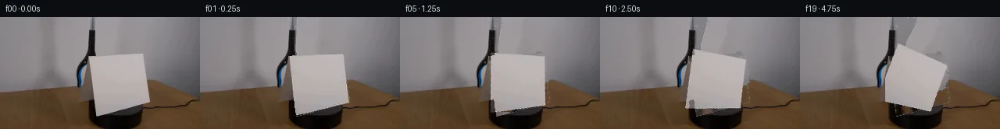

![首帧]()

Round 00
2026-11-04T19:32:38.448932+00:00像素候选变化代码 +348/−0inspection 更新
pixels efc59fe28d659e19 · code 390eff7531284af0
查看本轮 generate.py 真实 diff
--- previous/generate.py
+++ current/generate.py
@@ -0,0 +1,348 @@
+#!/usr/bin/env python3
+"""generate.py — Generate 20 RGB frames (256×144) for PixelWorld-Text.
+
+Scene: Cardstock rotates clockwise on a black platform. Blue-black grabber
+retracts after placing an orange tennis ball behind the cardstock.
+Frame 00 must exactly equal first_frame.png.
+
+Methods: Background inpainting via horizontal texture extension from visible
+surroundings. Cardstock extraction via brightness mask + edge refinement, then
+2D affine rotation around center. Analytic sphere shading for tennis ball.
+Grabber arm fade-out via opacity blend.
+"""
+
+import numpy as np
+from PIL import Image
+from scipy.ndimage import rotate, map_coordinates
+from pathlib import Path
+import sys
+
+# ── Paths ──────────────────────────────────────────────────────────────────
+CASE_DIR = Path('/mnt/bn/embodied-lf3/masiyuan/physics_iq_pixel_r2_full4fps/cleanroom_runs/deepseek-v4-pro/full_matrix_v1/text/case_0004_attempt_01/workspace')
+H, W = 144, 256
+
+# ── Load first frame ───────────────────────────────────────────────────────
+first = np.array(Image.open(CASE_DIR / 'first_frame.png')).astype(np.float64)
+assert first.shape == (H, W, 3), f'Unexpected shape: {first.shape}'
+
+# ── 1. Cardstock Mask ──────────────────────────────────────────────────────
+# Cardstock is the bright cream/white rectangle in center.
+# Upper portion (y<48) blends with wall; use relative brightness.
+# Main body (y>=48) is ~180 vs wall ~140.
+
+brightness = first.mean(axis=2)
+
+# Adaptive threshold: cardstock is locally brighter than surroundings
+# Compute row-wise smoothed background brightness (median of left+right edges)
+bg_left = np.zeros(H)
+bg_right = np.zeros(H)
+for y in range(H):
+ bg_left[y] = np.median(brightness[y, 10:50])
+ bg_right[y] = np.median(brightness[y, 200:240])
+
+# Local background = min of left/right (pessimistic), reshaped for broadcasting
+local_bg = np.minimum(bg_left, bg_right).reshape(-1, 1)
+# Cardstock must be at least 20 above local background
+cardstock_mask = (brightness > local_bg + 20) & (brightness > 120)
+
+# Refine: cardstock is a connected region in center
+# Also, the grabber arm overlaps cardstock on left — exclude grabber (very dark)
+grabber_dark = brightness < 25
+cardstock_mask = cardstock_mask & (~grabber_dark)
+
+# Find the main connected component
+from scipy.ndimage import label
+labeled, nlabels = label(cardstock_mask)
+if nlabels > 0:
+ # Find largest component in center region
+ sizes = np.array([(labeled == i).sum() for i in range(1, nlabels + 1)])
+ largest = np.argmax(sizes) + 1
+ cardstock_mask = (labeled == largest)
+
+# Also fill any holes in the cardstock mask
+from scipy.ndimage import binary_fill_holes
+cardstock_mask = binary_fill_holes(cardstock_mask)
+
+# Get cardstock bounding box
+cs_y, cs_x = np.where(cardstock_mask)
+cs_ymin, cs_ymax = cs_y.min(), cs_y.max()
+cs_xmin, cs_xmax = cs_x.min(), cs_x.max()
+cs_cy = (cs_ymin + cs_ymax) / 2.0
+cs_cx = (cs_xmin + cs_xmax) / 2.0
+
+print(f'Cardstock: y=[{cs_ymin},{cs_ymax}] x=[{cs_xmin},{cs_xmax}] center=({cs_cx:.1f},{cs_cy:.1f})')
+
+# ── 2. Background Inpainting ───────────────────────────────────────────────
+# Fill cardstock area by extending visible surroundings.
+# For each row: interpolate between left-visible and right-visible pixels.
+background = first.copy()
+
+# Create a "clean background" by horizontal extension
+for y in range(H):
+ row_mask = cardstock_mask[y, :]
+ if not row_mask.any():
+ continue
+
+ # Find left and right boundary of the cardstock gap on this row
+ gap_start = np.argmax(row_mask)
… diff truncated; 261 more lines …